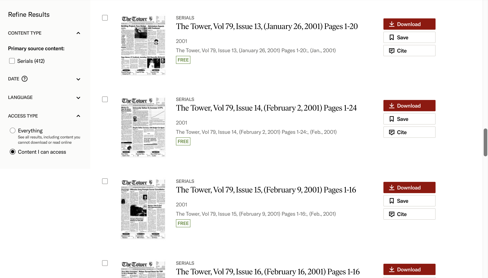
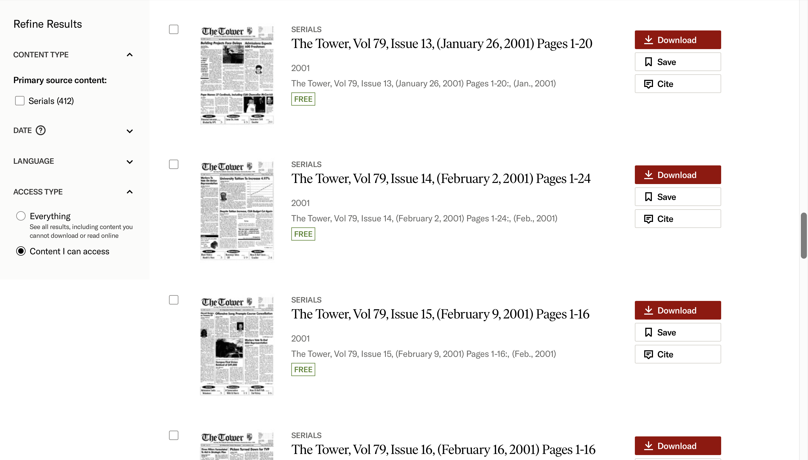

Part 1: Analyze the Website Using the Usability Framework
Step 1- Inputs and Outputs
| Input |
Output |
| Click on the JSTOR "home" button in the top left corner. |
Presented with the home screen. It is broken up into different sections with links to content that correlates with the sections heading. |
| Click on the "cite' button for an article. |
Presented with three citations in MLA, CHICAGO, and APA style. Has export links below that where you can export the citation to NoodleTools, RefWorks, EasyBib; or export it as an RIS file, or a Text file. |
| Used the search bar to search for the term "basketball." |
Got 134 results, sorted by relevance. |
Clicked the "For Librarians" button at the bottom of the webpage. |
Opened a new tab with a webpage titled "Resources for Librarians." Has different sections for different sources and has a learn more button under each of them. |
Step 2- Heuristic Analysis
Teacher's goal: conduct a class activity where students are shown original source material about conflict in the Middle East, and are encouraged to find an article of their own about the same topic.
- Visibility of System Status: Search results are displayed quickly with little loading time. A loading sign in the shape of a circle appears whenever content is loading, providing an indication to the user that the system is processing their request.
- Match Between the System and the Real World: The system used clear and concise language to help the users access the content. There was no jargon that was unfamiliar, and information appeared in a well-laid out manner. All of the search filters were simple and easy to understand.
- User Control and Freedom: When selecting an article, the webpage shows a trail of the steps that brought you to that article. This makes it easier to retrace your steps and allows you to quickly exit that page and get back to where you started from. This could be helpful to a student who clicked on an article and found that it was not what they were looking for. When searching "conflict in the Middle East," there were 40 results shown, but you cannot tell at a glance if they have the information you need. To see if they are relevant, students will have to read through some of them, and having a way to quickly go back to the main search will benefit them.
- Consistency and Standards: The website was very consistent with displaying the results in a similar way throughout the interaction. The search function is clearly labeled and had a magnifying glass next to it so users can quickly discern its function. The home button is prominent in the upper left-hand corner, although it is not clearly labeled "home." Users familiar with other websites that display their home button in a similar way will be able to figure out its function quickly, but users who expect a home button to be clearly labeled "home" might have a hard time finding it. The results are laid out in the same way, with the date following the volume and issue number; this makes it easy to quickly identify the result you are looking for. Having the date in the same place on every result will allow the students to more quickly find what they are looking for. They can identify what year the article is from, and decide if that article will have information about conflict in the Middle East based on that. Overall, the website is very standardized, which makes using it more efficient.
- Error Prevention: When accidentally misspelling a common word, the website will ask you if you meant to search for the correctly spelled word, allowing you to quickly fix your error. The clear display of the steps you took to get where you are allows you to swiftly exit a page you did not mean to click on. However, if you accidentally press the home button, there is no way to get back to the page you were previously on without using the back arrow in the browser. When pressing on the download button for an article, a pop-up window appears asking you to accept the terms and conditions before downloading. This is helpful and allows you to back out of the process if you did not mean to hit download.
- Recognition Rather than Recall: The search bar is in a prominent place and easy to find, as are the home button, the log in button, and the register button. The search help button is also easy to find but takes you to a new webpage with a list of links that might help you in your search. Some help in context is offered when your search turns up zero results: a couple suggestions appear to help you refine your search, such as checking your spelling or clearing your search filters. If one of these was the issue preventing you from getting the results you wanted, then the system works very well. But if you have a different issue you must go to the search help page, memorize the instructions, and go back to your search, which is not efficient for recognition.
- Flexibility and Efficiency of Use: There is not an abundance of shortcuts on the website, but the links to get back to where you started from do provide a small shortcut if you know where you want to go. You are able to zoom in and out of the article you are reading and are also able to search for keywords within the article, so there is a little customization available on this website. However, all other customizations must be done through the browser, not on the website itself. If you have an account through JSTOR you can personalize your experience by saving articles, arranging them into folders, and exporting links. If you do not have an account, there is little personalization available, and the website does not keep track of previously searched terms. This would make searching harder for the students, because they will not be able to keep track of search terms they have already tried, and which ones worked and which did not.
- Aesthetic and Minimalist Design: The website uses a minimalist design with only a few colors that do not distract from the searching experience. The webpages are well-laid out and keep the same layout when the window is decreased to half the screen. There are no obstructions to viewing the content and it is very easy to look at. There are also no distractions on the screen and the content is prioritized as the main focus.
- Help Users Recognize, Diagnose, and Recover from Errors: When conducting a search where zero results are found, the webpage displays "0 results" in bold letters. Under that a few suggestions pop up to improve your search, such as to check your spelling or broaden your search. These are suggestions are helpful, but they do not pinpoint exactly where you went wrong in that particular search. There is a link that takes you to the search help page, but other than that you are on your own to figure out where your search went wrong. This could be very frustrating for students as many of them may be first-time users that aren’t very experienced with searching databases and do not know where they made a mistake. A clearer indication of what went wrong in the search would be beneficial to users.
- Help and Documentation: The search help page has a very extensive list of links to a variety of articles about finding resources and using JSTOR search features. It also includes a YouTube video about how to use the database. The various articles also include links to videos that demonstrate how to use the site. These are semi-helpful, but all of these features are time-consuming to read through. While they are good if you want to learn more about how to use JSTOR or want to do a deep dive into all of its features, they are unhelpful if you have a simple problem you need a solution to quickly. The page also has a pop-up where you can chat with a support team member, which could be helpful in getting answers quickly. However, on the search help resources page, there is a button where you can indicate if you found the site helpful, and out of everyone who responded, only about 54% of people indicated that they did.
Step 3- Strengths and Weaknesses
- Strength #1: Aesthetic and Minimalist Design
- The website is laid out well and is easy to navigate. The newspaper collections are divided into five groups covering about two decades each, which aids in ease of searching for articles from particular time periods. When searching for articles about conflict in the Middle East, students can narrow their search down to the time period they think will have the most articles about that topic.
- Strength #2: Consistency and Standards
- All of the results for a search are laid out in the same way, allowing students to compare and contrast results quickly and efficiently. The website is also laid out in a logical way, making it easy to navigate.
- Weakness #1: Flexibility and Efficiency of Use
- While searching different terms, there is no record of what terms the user has already searched for. Having a record through the website of what you have searched for would be helpful in remembering what terms you have already tried and which ones were more successful. This could help undergraduate students to understand where they went wrong in their previous searches and what terms would be most effective to find the articles they are looking for.
- Weakness #2: Help Users Recognize, Diagnose, and Recover from Errors
- When an error is made, the website does not do a good job of pointing out what it is, and the user is left to figure out both the error and solution on their own. For undergraduate students this could be particularly frustrating, as many of them might not be well-versed in navigating databases. A recommendation for improvement would be to tailor the search function to better recognize errors and provide specific suggestions to resolve the problem at hand.
 

Part 2: Conduct a "Mini-Usability" Test
Step 4- Usability Test
Submitted as separate documents.
Step 5- Comparison of Analysis and Usability Test
One similarity between my analysis and mini-usability test was that one of the weaknesses I identified (helping users recognize, diagnose, and recover from errors) was one of the points the user in the mini-usability test identified as hindering them in their search efforts. They strongly disagreed that the system provided informative feedback, which is something I mentioned in my analysis. Another similarity is that the user said the way information was presented was consistent across the website, which is something I identified as a strength. One difference between my analysis and the mini-usability test was that the user said they found the website to be not efficient, whereas I said it was.
The main suggestion for improvement I have is to create a system to help identify users' errors and provide feedback that is tailored to the specific error that user made. This will allow users to more quickly identify what went wrong and how to fix it. Another suggestion would be to provide more help in context, so users don't have to leave the screen they are on to go to the help page. If they are provided help on the screen they are on, it will help them resolve the issue faster and lead to less frustration.
System Analysis and Usability Test
Sydney Henry
LSC 555 Assignment 2